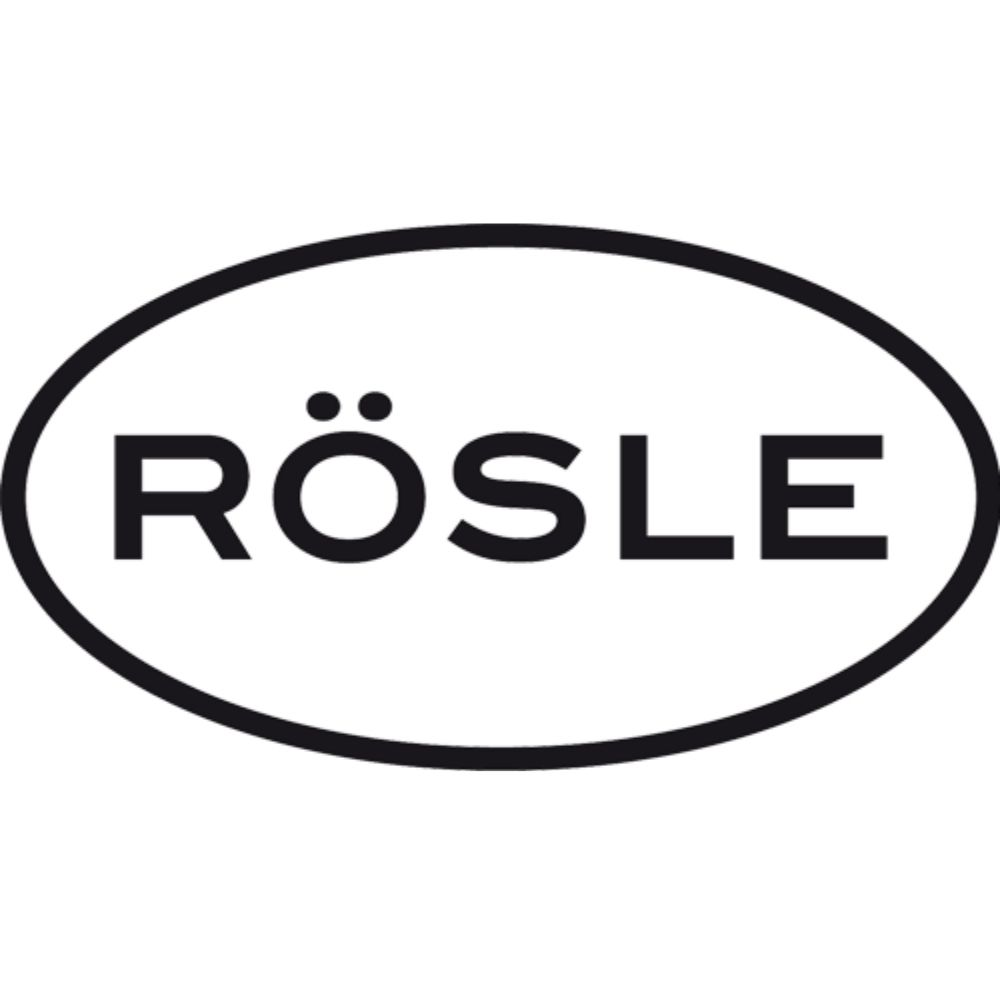
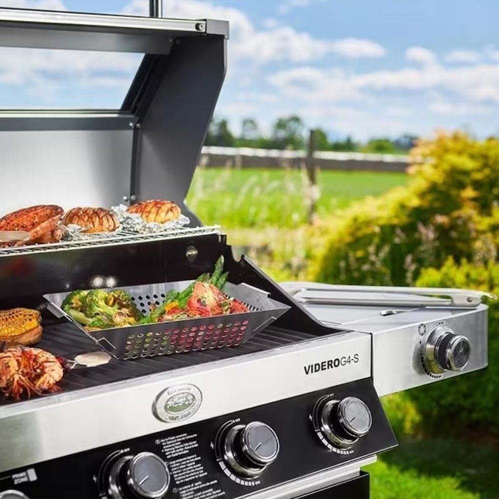
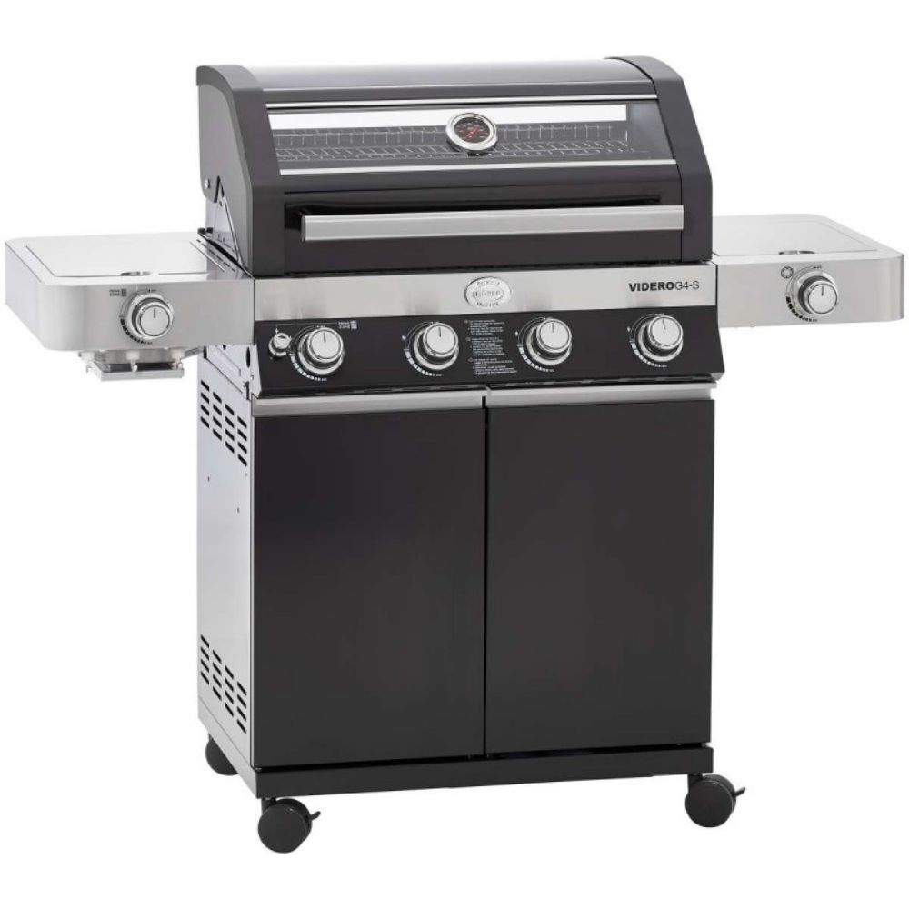
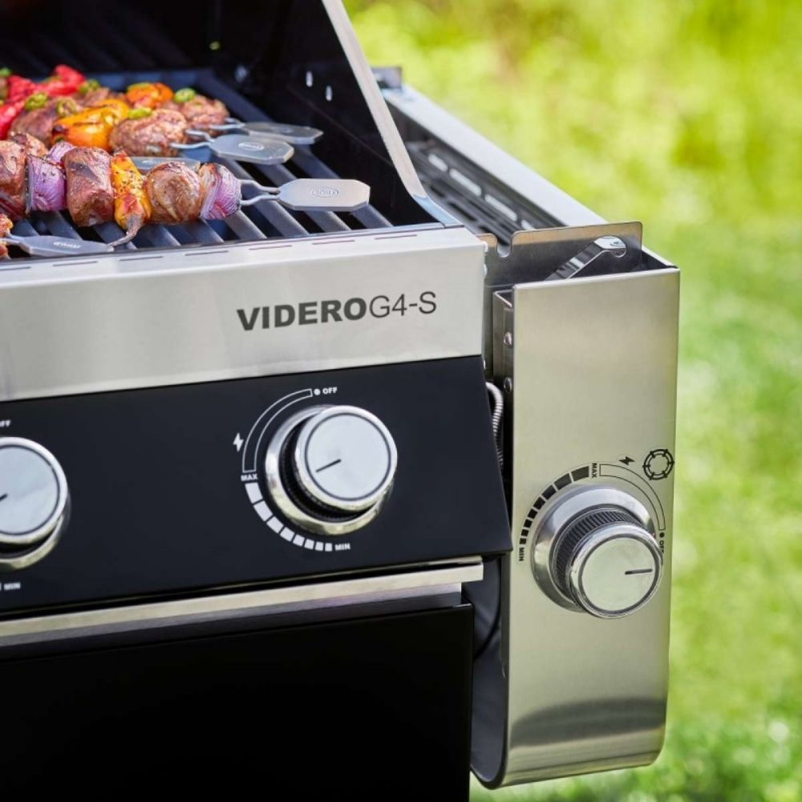
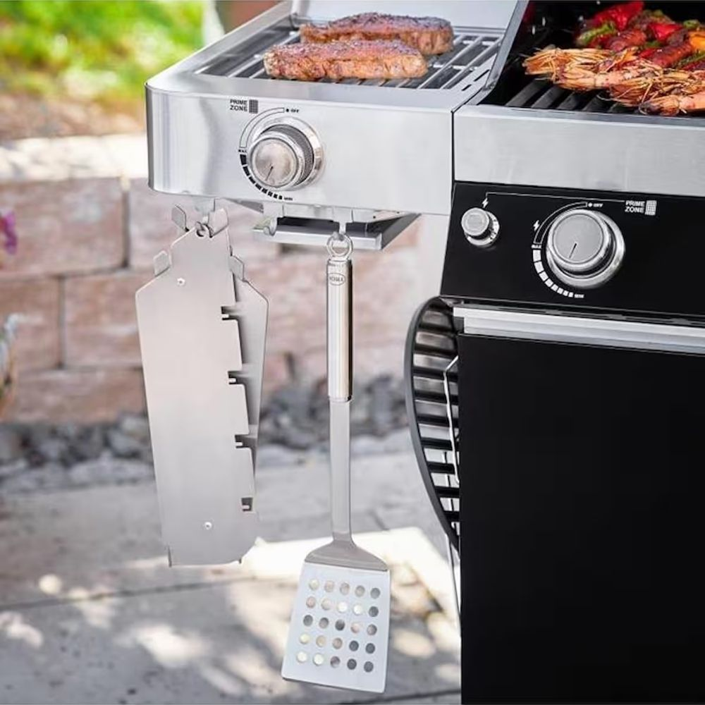
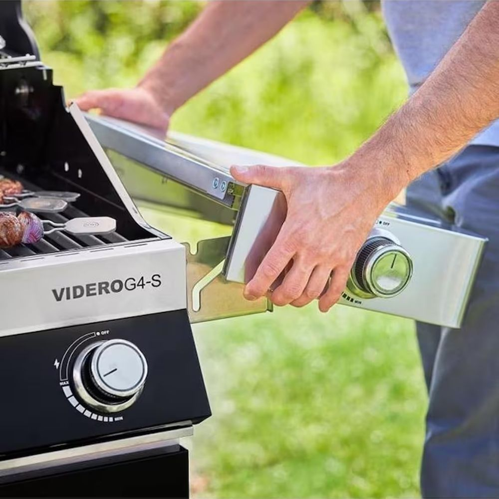
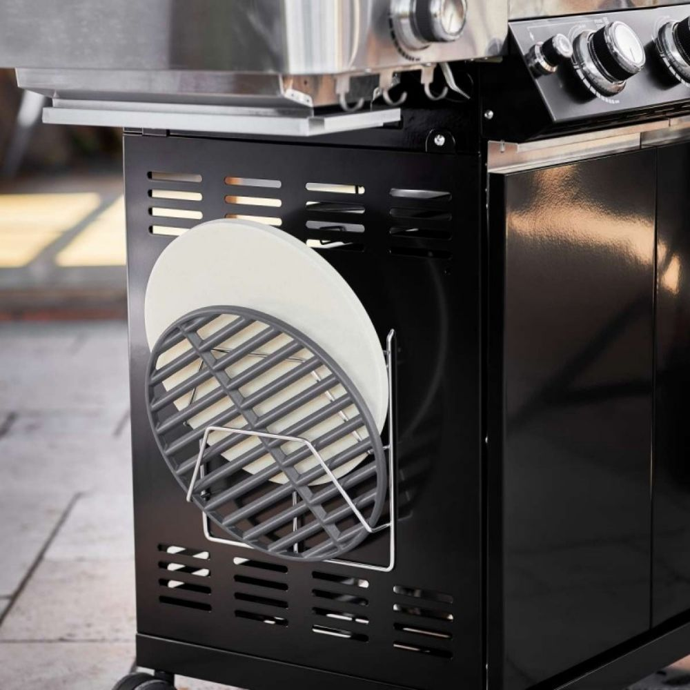

Cam kapak sayesinde pişme durumunu izleyebilirsiniz. Termometre °C ve °F gösterir.


Işıklı panel ile kontrol sizde. Kırmızı: Açık | Mavi: Kapalı.

11 kg gaz tüpü için geniş depolama alanı.

Her biri 3.5 kW gücünde 3 ana, 1 PrimeZone brülör içerir. 3 kW (10,236 BTU) gücünde entegre yan brülör. Her iki yanda katlanabilir yan brülör ve PrimeZone bulunur. 800°C'ye kadar ısınabilen PrimeZone ile yiyecekleriniz istediğiniz çıtırlıkta olsun.

Bahçenizde kolay taşıma ve konumlandırma imkanı sağlar.
